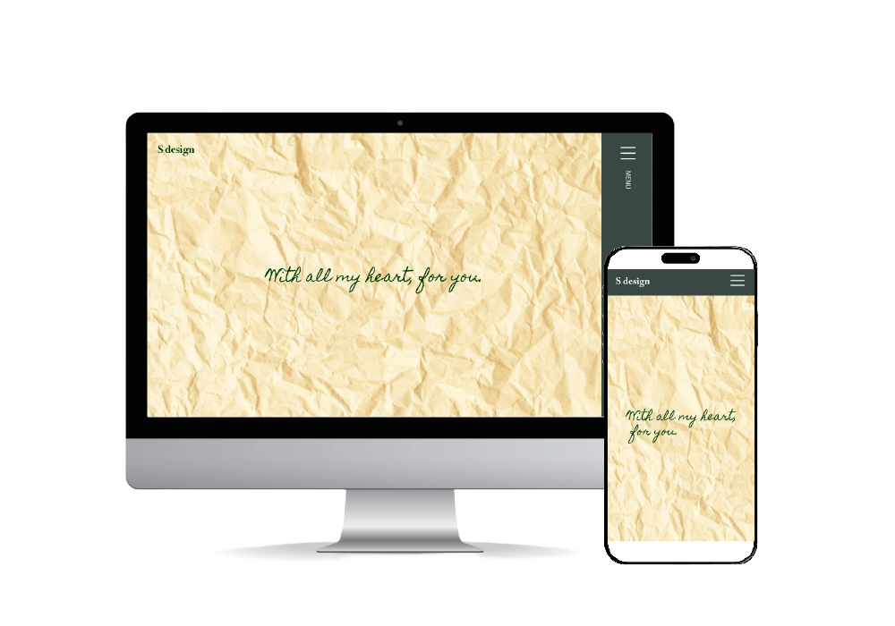

S Design
WEB DESIGN
担当：デザイン / コーディング
期間：２ヶ月
使用ツール：Illustrator / Photoshop / Visual Studio Code
制作概要
デザインスクール「デザスタ」の卒業制作として、デザインから素材の選定、コーディングまでを一貫して制作しました。わたしを知ってもらうための作品として、自分らしさを伝えるために文章を考え、「花束」「ナチュラル」「女性らしさ」をテーマにデザインしています。
POINT
ナチュラルで女性らしく、そして自身のデザインのテーマである『贈る人のことを考えて作る花束』のイメージが伝えられるよう、包装紙をメインビジュアルにしました。また、シンプルで見やすいサイトの作成を心掛けており、特にサイト閲覧の遊覧性（ユーザビリティ）にこだわり、ヘッダーメニューを作成しています。